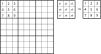
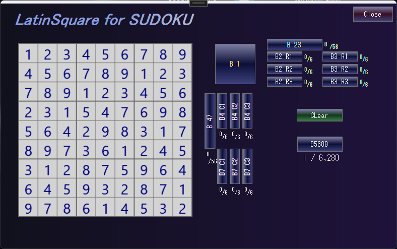

Latin Square ver.6
⇒Latin Square(classic version)
Latin squares is a Matrix with numbers 1 to n arranged vertically and horizontally without overlapping.
Sudoku's solution is that it divides the 9x9 Latin square into 3x3 blocks and places numbers 1 to 9 on the block without overlapping.
There is 5.525x1027 for the 9x9 Latin square(5524751496156892842531225600).
The 9x9 Latin square with block constraint(Sudoku's solution) is 6.671x1021 and
about 1/1,000,000 (6670903752021072936960).
【参考】Frazer Jarvis, June 20, 2005,Enumerating possible Sudoku grids,
http://www.afjarvis.staff.shef.ac.uk/sudoku/sudoku.pdf
Sudoku Latin squares can be derived by the following steps:
Step 1
Fix the digits in block 1 (top left block) of the Sudoku Latin square.
This is because when the numbers in block 1 are {ak|k=1 to 9},
by applying the {ak→k} transformation to the entire square,
it can be transformed into the square on the left.

Step 2
Name the top three blocks as follows. Each element is a set of three numbers.
Given A, B, C, D, E, F are uniquely determined.
A can be any three digits from {4,5,6,7,8,9},
which means there are 6C3=20 possibilities.
Block2
00 ...456...
01 ...45.7..
02 ...45..8.
03 ...45...9
04 ...4.67..
05 ...4.6.8.
06 ...4.6..9
07 ...4..78.
08 ...4..7.9
09 ...4...89
10 ....567..
11 ....56.8.
12 ....56..9
13 ....5.78.
14 ....5.7.9
15 ....5..89
16 .....678.
17 .....67.9
18 .....6.89
19 ......789
Once A is determined, B will be anything other than {4,5,6} ∪ A.
C has no common elements with {7,8,9} ∪ A ∪ B . Depending on B, C may not be present.
Therefore, B and C are determined at the same time.Case B = {4,5,6} and {7,8,9}, there is one possible combination of C, and in all other cases there are three possible combinations of B and C. There are a total of 56 possible combinations of B and C.
A, B, C are sets of three elements
A ⊂ {4,5,6,7,8,9}
B ⊂ {1,2,3,7,8,9} - A
C ⊂ {1,2,3,4,5,6} - (A ∪ B)
Block2(B) Block3(C) Block4 Block7
00 ...456... ......789 .2..5..8. ..3..6..9
01 ...45.7.. 1......89 .23.5.... 1....6..9
02 ...45.7.. .2.....89 .23.5.... ...4.6..9
03 ...45.7.. ..3....89 .23.5.... .....67.9
04 ...45..8. 1.....7.9 .2..56... 1.3.....9
05 ...45..8. .2....7.9 .2..56... ..34....9
06 ...45..8. ..3...7.9 .2..56... ..3...7.9
07 ...45...9 1.....78. .2..5...9 1.3..6...
08 ...45...9 .2....78. .2..5...9 ..34.6...
09 ...45...9 ..3...78. .2..5...9 ..3..67..
10 ...4.67.. 1......89 .23....8. 1....6..9
11 ...4.67.. .2.....89 .23....8. ...4.6..9
12 ...4.67.. ..3....89 .23....8. .....67.9
13 ...4.6.8. 1.....7.9 .2...6.8. 1.3.....9
14 ...4.6.8. .2....7.9 .2...6.8. ..34....9
15 ...4.6.8. ..3...7.9 .2...6.8. ..3...7.9
16 ...4.6..9 1.....78. .2.....89 1.3..6...
17 ...4.6..9 .2....78. .2.....89 ..34.6...
18 ...4.6..9 ..3...78. .2.....89 ..3..67..
19 ...4..78. 12......9 .23..6... 1..4....9
20 ...4..78. 1.3.....9 .23..6... 1.....7.9
21 ...4..78. .23.....9 .23..6... ...4..7.9
22 ...4..7.9 12.....8. .23.....9 1..4.6...
23 ...4..7.9 1.3....8. .23.....9 1....67..
24 ...4..7.9 .23....8. .23.....9 ...4.67..
25 ...4...89 12....7.. .2...6..9 1.34.....
26 ...4...89 1.3...7.. .2...6..9 1.3...7..
27 ...4...89 .23...7.. .2...6..9 ..34..7..
28 ....567.. 1......89 ..3.5..8. 1....6..9
29 ....567.. .2.....89 ..3.5..8. ...4.6..9
30 ....567.. ..3....89 ..3.5..8. .....67.9
31 ....56.8. 1.....7.9 ....56.8. 1.3.....9
32 ....56.8. .2....7.9 ....56.8. ..34....9
33 ....56.8. ..3...7.9 ....56.8. ..3...7.9
34 ....56..9 1.....78. ....5..89 1.3..6...
35 ....56..9 .2....78. ....5..89 ..34.6...
36 ....56..9 ..3...78. ....5..89 ..3..67..
37 ....5.78. 12......9 ..3.56... 1..4....9
38 ....5.78. 1.3.....9 ..3.56... 1.....7.9
39 ....5.78. .23.....9 ..3.56... ...4..7.9
40 ....5.7.9 12.....8. ..3.5...9 1..4.6...
41 ....5.7.9 1.3....8. ..3.5...9 1....67..
42 ....5.7.9 .23....8. ..3.5...9 ...4.67..
43 ....5..89 12....7.. ....56..9 1.34.....
44 ....5..89 1.3...7.. ....56..9 1.3...7..
45 ....5..89 .23...7.. ....56..9 ..34..7..
46 .....678. 12......9 ..3..6.8. 1..4....9
47 .....678. 1.3.....9 ..3..6.8. 1.....7.9
48 .....678. .23.....9 ..3..6.8. ...4..7.9
49 .....67.9 12.....8. ..3....89 1..4.6...
50 .....67.9 1.3....8. ..3....89 1....67..
51 .....67.9 .23....8. ..3....89 ...4.67..
52 .....6.89 12....7.. .....6.89 1.34.....
53 .....6.89 1.3...7.. .....6.89 1.3...7..
54 .....6.89 .23...7.. .....6.89 ..34..7..
55 ......789 123...... ..3..6..9 1..4..7..
Step 3
A,B,C,D,E,F are each a set of three numbers, and can be set independently in 3P3=6 ways.
Step 4
The three blocks on the left can be set in the same way as the top three blocks or can be calculated by conversion(see GNPX_v6). The top three blocks and the left three blocks can also be set independently.
Step 5
Once the top three blocks and the three blocks on the left are determined, the remaining four blocks are found by brute force (for example, TryAndError).
Latin Square Application
If you have reached this point (or warped),
you may want to move the Latin square generation application LatinSquareExer).
If you select blocks B2, B3, B4, B7, you will see the number of Latin Square with block constraints
for this pattern under the B5689 button. B5689 When you click the button,
it displays in the order of individual Latin squares.
The number of Latin squares with block constraints that can be solved by Sudoku is 6.671x1021/(9!).
Try and experience how many Numeral arrays are available for Sudoku's solution.
And if you have a Sudoku analysis program you can create a
"SuDoKu Puzzle Creation Program" by connecting with this routine.
